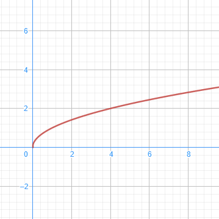
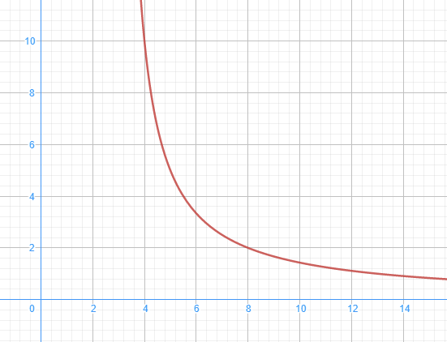
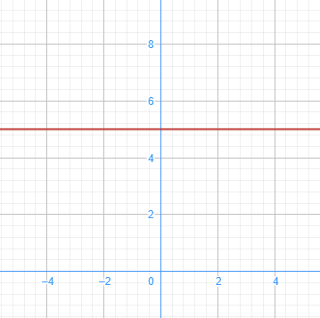

Monotonía
- Función creciente
-
Una función \(f\) es creciente en un intervalo \(I\) si, al tomar dos valores \(a<b\) en \(I\), entonces \(f(a)<f(b)\).

- Función decreciente
-
Una función \(f\) es decreciente en un intervalo \(I\) si, al tomar dos valores \(a<b\) en \(I\), entonces \(f(a)>f(b)\).

- Función constante
-
Una función \(f\) es constante en un intervalo \(I\) si, al tomar dos valores \(a<b\) en \(I\), entonces \(f(a)=f(b)\).

Cuando hablamos de estudiar la monotonía de una función, nos referimos a escribir los intervalos donde la función es creciente, decreciente o constante.